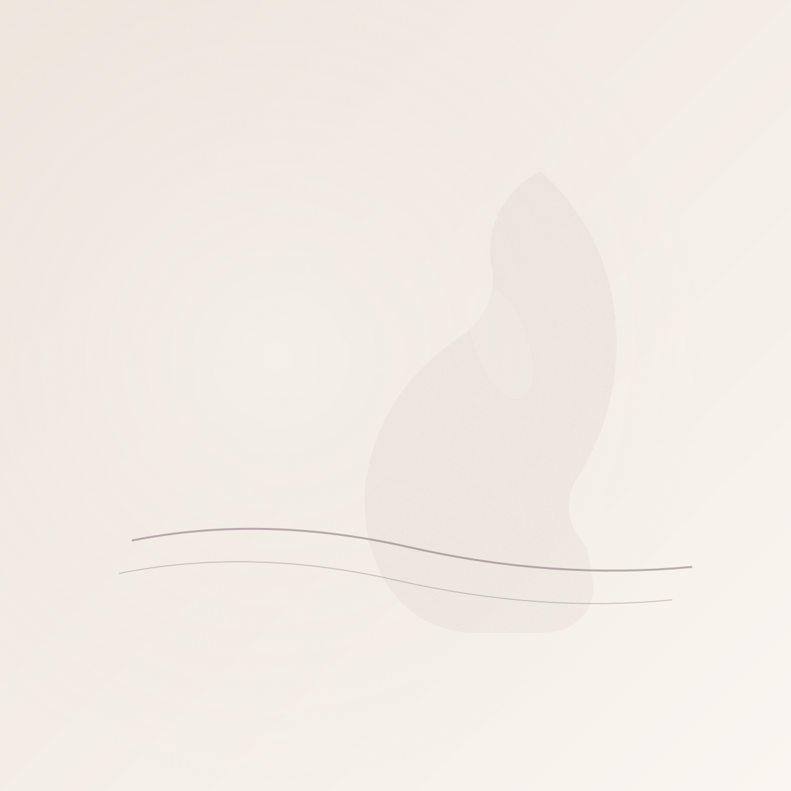
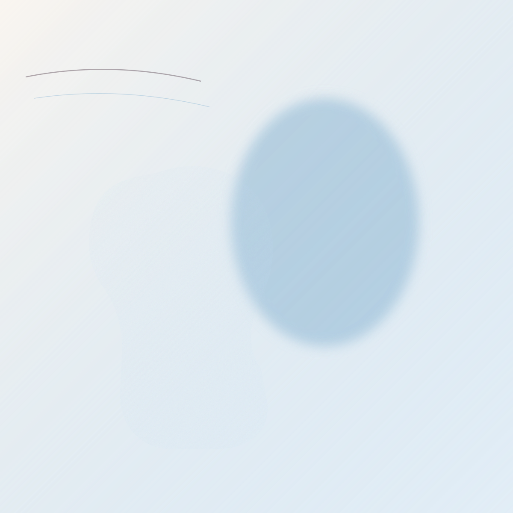
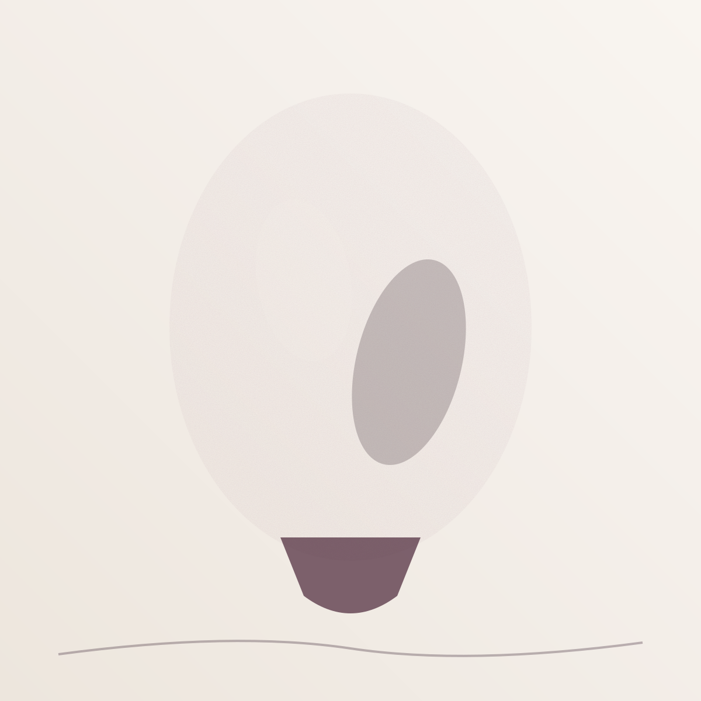
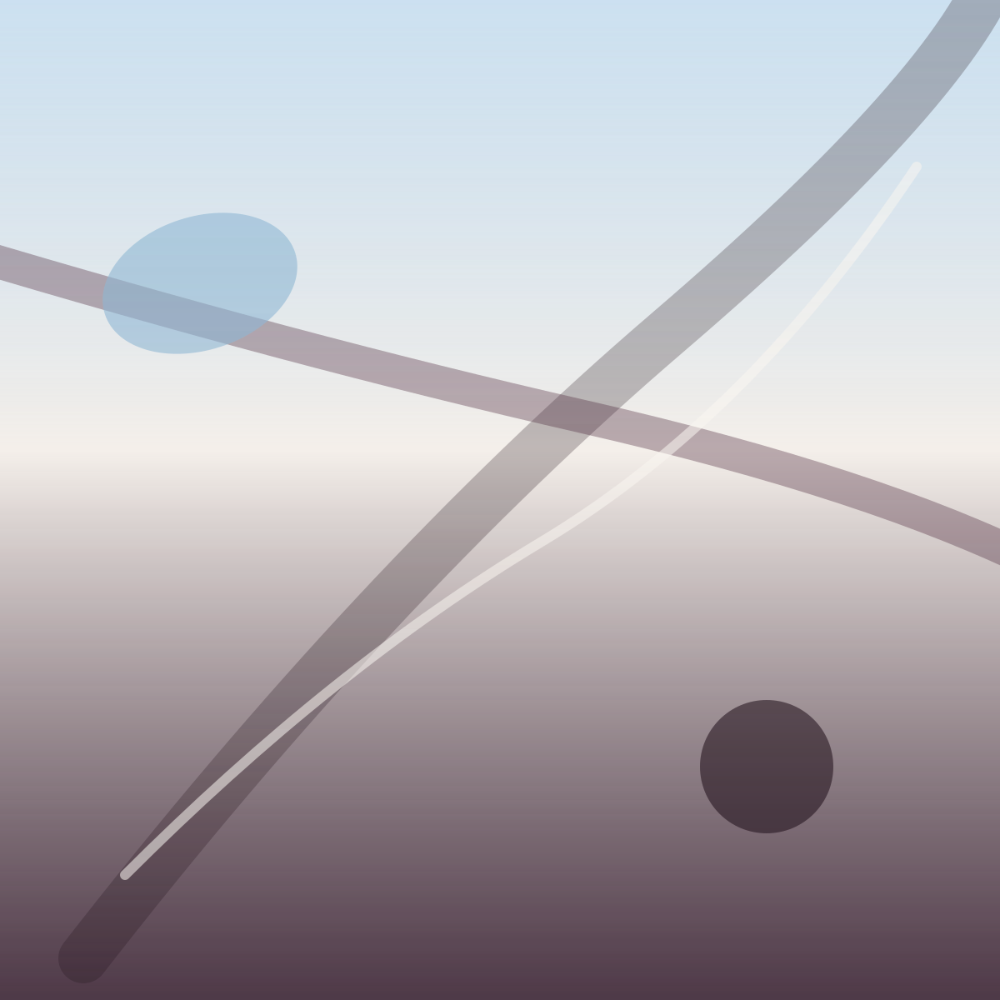
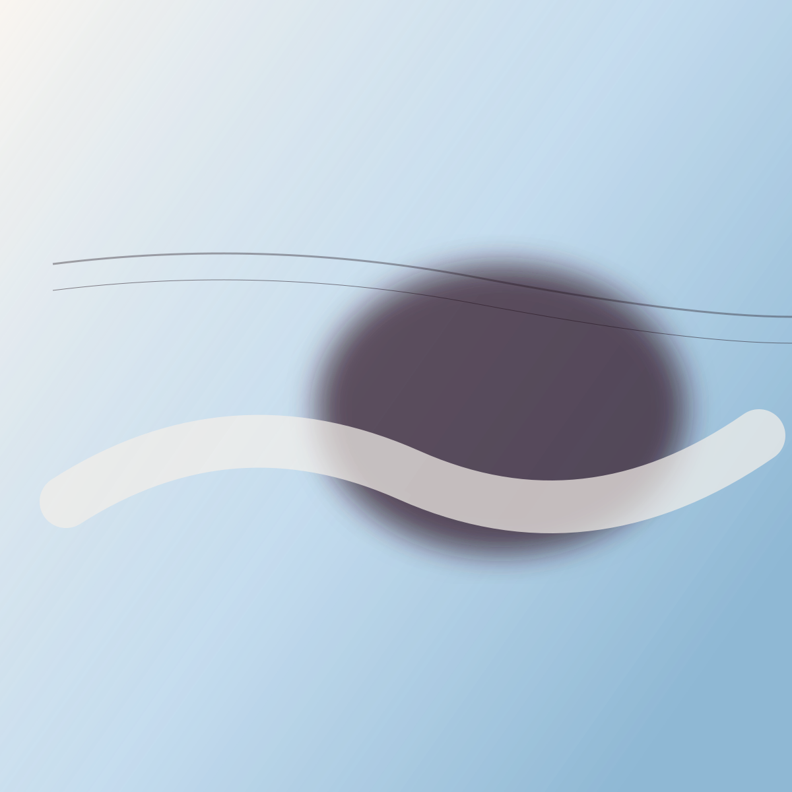
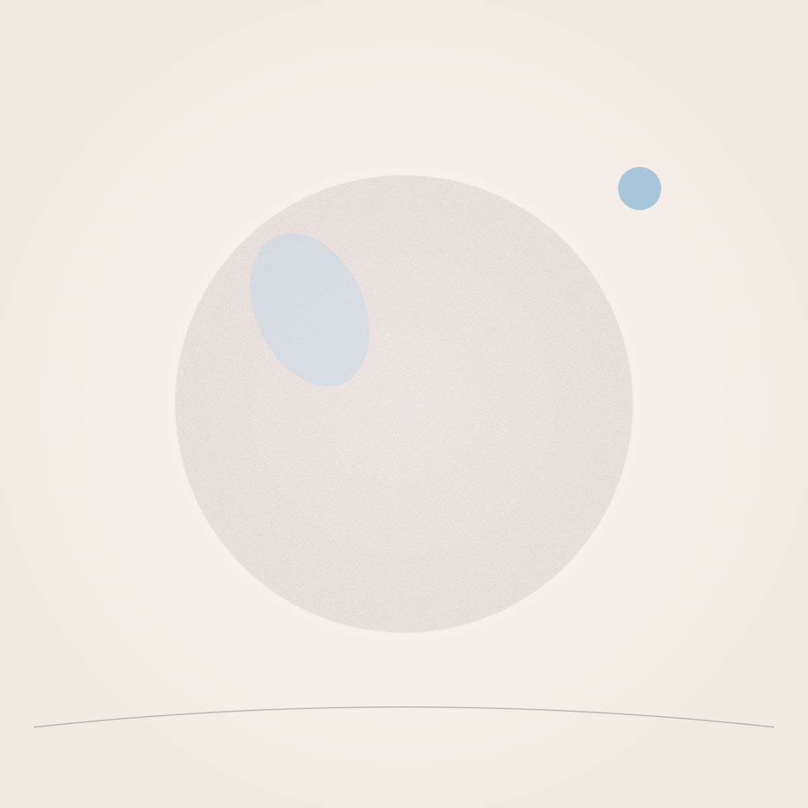
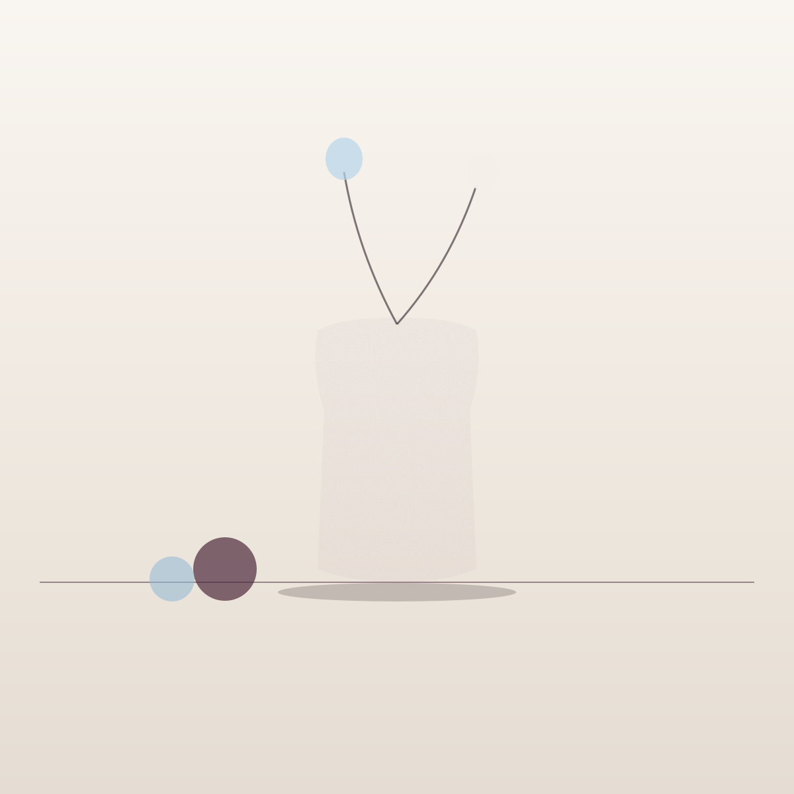
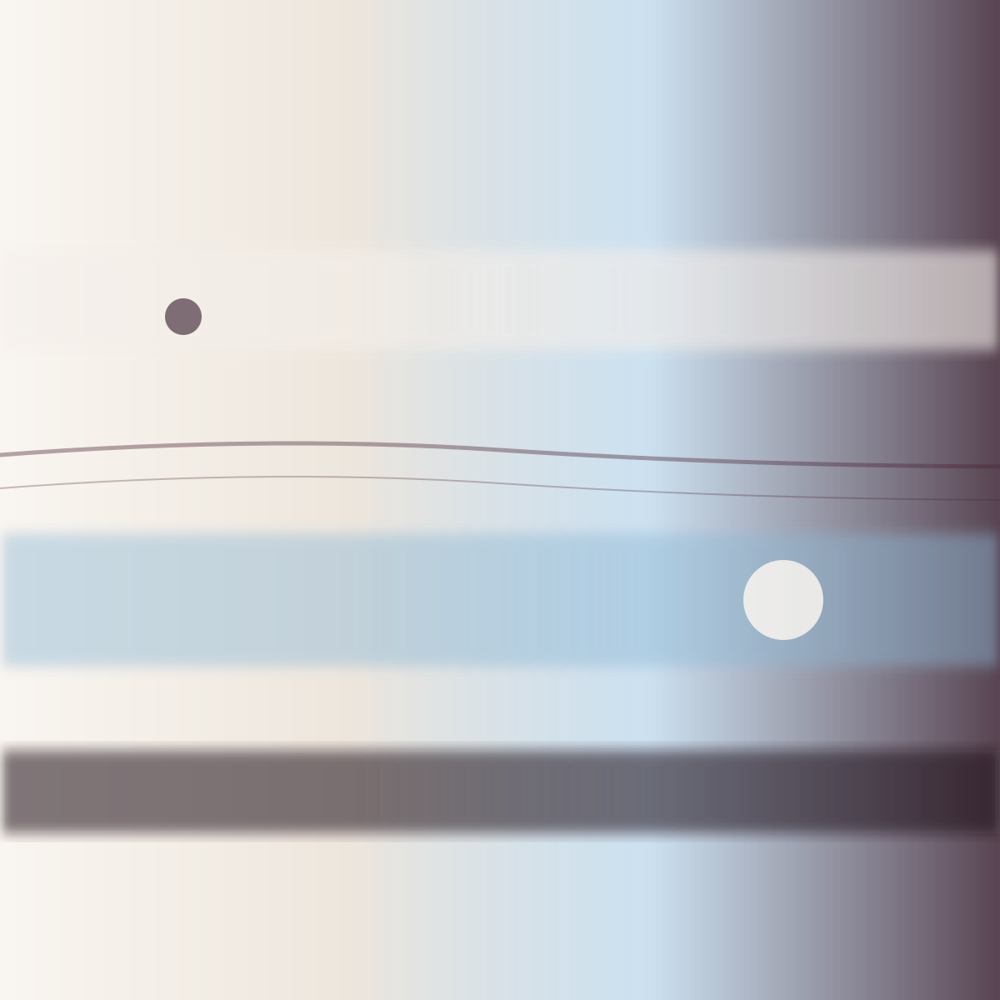
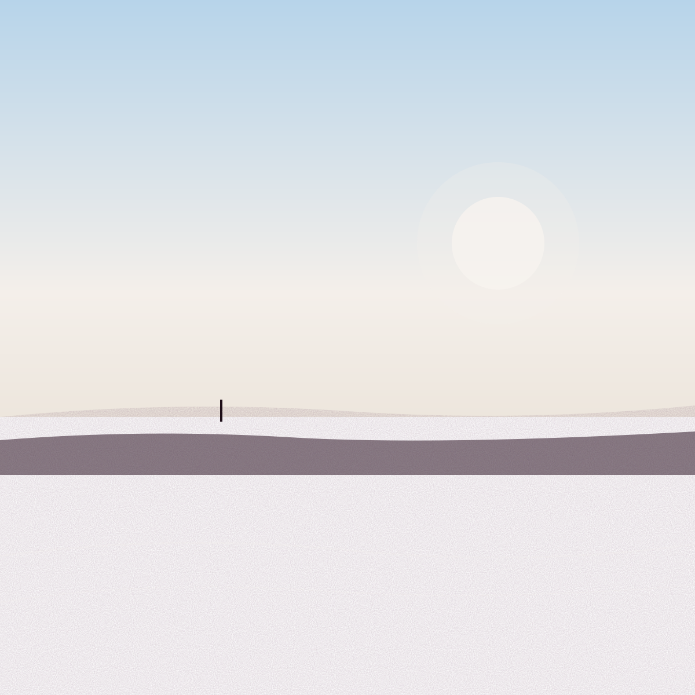

Originální malby na zakázku.
Portréty, abstraktní kompozice, dárky se smyslem.
tbrska — Dominika Táborská. Výtvarnice, která maluje to, co se do fotky nevejde. Olej, akryl, uhel. Plátna, která visí v bytech v Česku, na Slovensku i dál.
Malý výběr z realizovaných zakázek za poslední roky. Některé obrazy si majitelé nechávají pro sebe — ale tohle prošlo.
Všechny kategorie dohromady. Klikni na některý z filtrů pro zaměření.
Tváře, které zůstaly.
Když portrét není portrét.
Ostatní malířské práce.









Zatím tady nic není — ale chystá se.
Vyrostla jsem mezi dvěma jazyky a dvěma zeměmi — a možná proto jsem nakonec našla třetí řeč: barvu.
K malování jsem se dostala přirozeně, skoro neviditelně. Nejdřív to byly skicy do sešitů, pak portréty blízkých, pak lidé, které jsem nikdy neviděla, ale cítila. Dneska tvořím obrazy, které visí v bytech v Česku, na Slovensku i dál — a pokaždé je to trochu jako dát kus sebe někomu jinému.
Maluji portréty, které se dívají zpátky. Abstrakce, které nevysvětlují, ale cítí. A obrazy na míru — pro dárek, pro vzpomínku, pro zeď, která volá.
Je to pomalá práce.
A to se mi na tom líbí nejvíc.
— Dominika
Tři typy zakázek. Jeden společný jmenovatel: originál. Cenu počítám vždy na míru — závisí na velikosti, technice a náročnosti.
Realistický i stylizovaný portrét z fotografie. Pro milovanou osobu, vzpomínku nebo dárek, co zůstane.
Portréty maluji z fotografií, které mi pošleš. Nejvíc mi pomáhá, když je tam světlo z okna a nepózovaný moment — ale žádné pravidlo neplatí. Pracuji olejem nebo akrylem, podle toho, jakou náladu obraz potřebuje.
Může to být portrét dítěte, partnera, babičky, která už tady není, nebo někoho, koho jsi chtěla namalovat, ale nikdy ses k tomu nedostala. Všechno je v pořádku.
Abstraktní kompozice na zakázku. Barevná paleta a rozměry dle zadání a prostoru.
Abstrakce jsou moje nejsvobodnější zóna. Pracuji intuicí, vrstvami a barvou, která sama říká, kam chce jít.
Obvykle je to proces: povíš mi, co má obraz dělat s místností — uklidnit, probudit, vyprávět? Jakou máš kolem sebe paletu? Jakou hudbu poslouchaš, když tam jsi? A z toho se rodí plátno.
Žádné dva obrazy nejsou stejné. Často ani já neumím dopředu říct, jak to dopadne. Právě to je na tom to nejlepší.
Protože parfém už měla.
Stačí říct: pro koho, proč a do kdy. Zbytek je na mně. Včetně toho, aby o tom nikdo jiný nevěděl.
Pomůžu ti vybrat formát, vymyslet námět, připravit všechno tak, aby to bylo překvapení. Diskrétně, bez spoilerů. Funguje to na narozeniny, výročí, svatby, ale i prostě tak.
Pár slov od lidí, kteří si nechali namalovat něco svého.
Pár referencí dorazí brzy. Mezitím si klidně mrkni na Instagram.
@taborskaarts ↗Formulář slouží pro nezávaznou poptávku na zakázkový obraz. Odpovídám obvykle do 2 pracovních dnů.